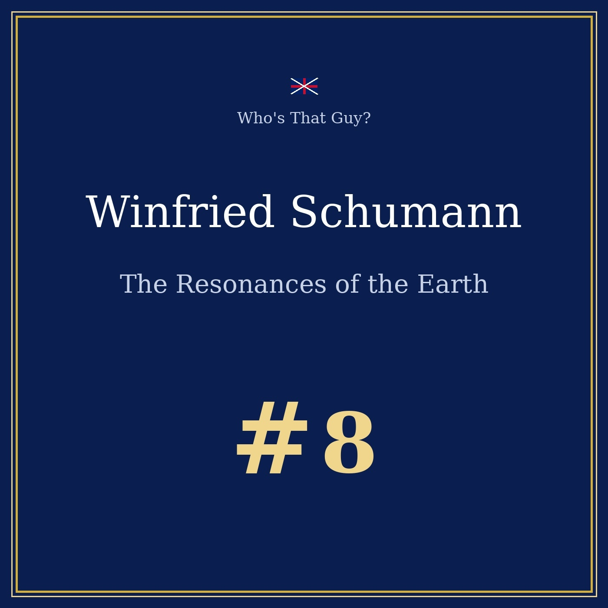
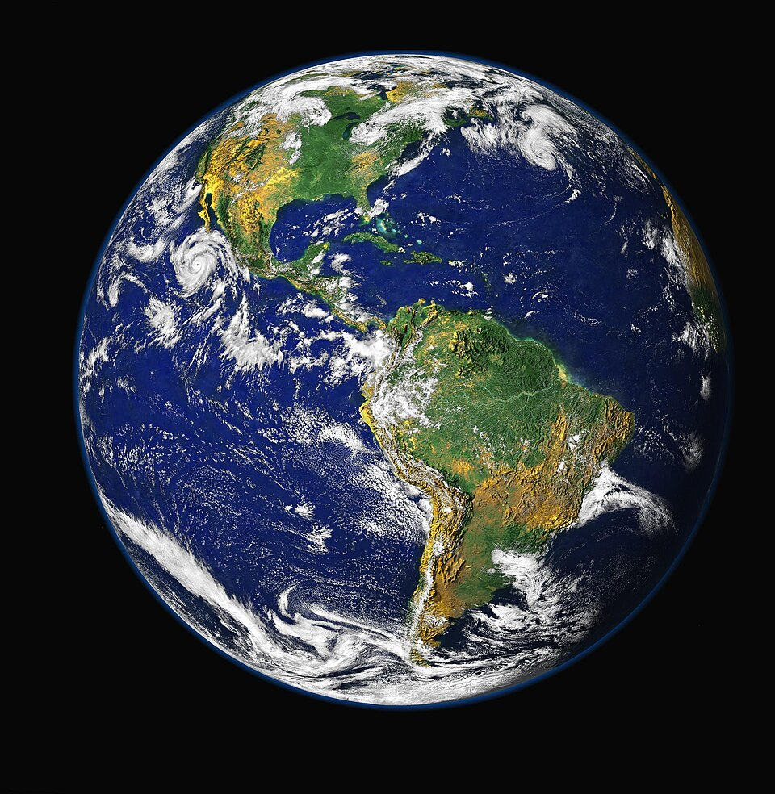
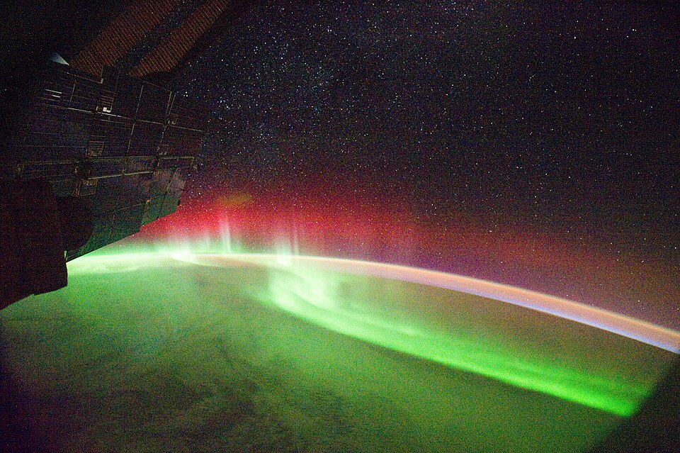

Episode 8 — one division, and twenty years nobody could hear
This program is a work of fictional radio biography. Winfried Otto Schumann really existed and every biographical fact here is real and verifiable; the interview is an imagined reconstruction by our editorial team.

🎧 Listen to the portrait: Winfried Schumann and the Resonances of the Earth, 14 min 12 — Listen on Spotify →
Winfried Otto Schumann was born in 1888 in Tübingen, Germany, the son of a physical chemist. He grew up in Cassel, then in Berndorf near Vienna, and studied electrical engineering at the Karlsruhe institute, where he took his doctorate in 1912. He married, had two sons, and spent his career in a basement laboratory, writing papers few colleagues read. One confusion first: this Schumann is not Robert Schumann.
"I have no connection with the composer. He was a different man, in a different century, in a different field. It is unjust, and rather comic."
Between the globe's surface and the ionosphere — the conducting layer of the upper atmosphere, some seventy to eighty kilometres above us — lies an electromagnetic cavity: two conducting surfaces facing one another, like the pipe of an organ. A wave that enters it bounces around the planet.
The lowest mode of such a cavity is the wave whose wavelength equals the circumference of the Earth: some forty thousand kilometres. Divide by the speed of light and you get 7.83 hertz. Above it come the harmonics — 14.1, 20.3, 26.3 and 32.5 Hz — separated by roughly six and a half hertz and growing weaker. Schumann was careful with the word "mystical": this is not a sacred number, it is a division.


What excites the cavity is lightning, and nothing else. At any moment roughly 2 000 thunderstorms are active across the globe, producing close to 50 flashes of lightning per second. A lightning channel is an antenna beyond measure: it injects very low frequency energy into the cavity. The background at the ground is the signature of all the thunderstorms of the planet, added together. The Earth does not play music, it reacts to the lightning, like a drum struck everywhere at once — and the cavity leaks, so the peaks are damped.
The idea did not appear from nowhere. In 1893 the Irish physicist George Francis FitzGerald noticed that the high layers of the atmosphere must be good conductors; in 1902 Heaviside and Kennelly proposed the ionosphere, and in 1925 Appleton and Barnett demonstrated it. Schumann inherited a question others had posed — but carried it to its end: not the conductivity of a layer, but the resonance of a sphere.
In 1952 he published the demonstration with his student H. L. König: elegant, short, verifiable. The gap between the ideal model and reality came down to the finite conductivity of the ground and of the ionosphere. Then came the question that stopped everything: very well — and then what? Show us. An idea nobody can measure does not disappear, but it becomes widowed.
The useful signal was drowned in the noise of the world: engines, storms, the magnetosphere, the background of our own machines. What was needed was noise and patience — years of measurement, then years hunting for the right analysis. König obtained the first experimental indication in 1958, then again in 1961. Between 1960 and 1963, Balser and Wagner solved the analysis problem: the signal was extracted from the noise. Schumann died in Munich on 22 September 1974.
Here the poetry stops. The electric field of the fundamental resonance is of the order of 300 microvolts per metre, while the static fair-weather field is 150 volts per metre — the resonance is roughly five hundred thousand times weaker. The magnetic field is of the order of the picotesla, against 30 to 50 microteslas for the Earth's own field. If the Earth hums, it hums with the voice of a fly.
And yet that silence is a formidable instrument. The cavity is a planetary laboratory: its resonances let us count the thunderstorms of the world and follow their geography, measure the temperature of tropical air and the upper water vapour, and locate hydrocarbon deposits off the coasts.
In the 1980s, the United States installed an ionospheric research programme in Alaska, HAARP, which heats the ionosphere slightly to study it. The programme fed every theory, including the idea that someone had silenced the song of the Earth. No: these resonances do not fall silent — they have been measured for decades, everywhere, with ever more precise instruments. What one could silence would be the possibility of checking.
Then the internet arrived, and with it a wellness industry: generators at 7.83 hertz, promises of healing, of DNA that repairs itself. Science posed the question without answering it — a 2025 review of Schumann resonances and the human body speaks of an open problem. An open question is not a proof: these resonances are an instrument, not a medicine.
Schumann never heard his own frequency, and was not troubled by it: beneath our feet, at 7.83 hertz, the Earth goes on turning inside its cavity. We shall not hear it any better for that. But it goes on humming, all the same.
Sources: Wikipedia (Schumann resonances, Winfried Otto Schumann), MDPI Applied Sciences 15(1):449 (2025). Music: “Träumerei” (Op. 15 No. 7), Robert Schumann — Edigarmonteiro, CC BY-SA 3.0, Wikimedia.